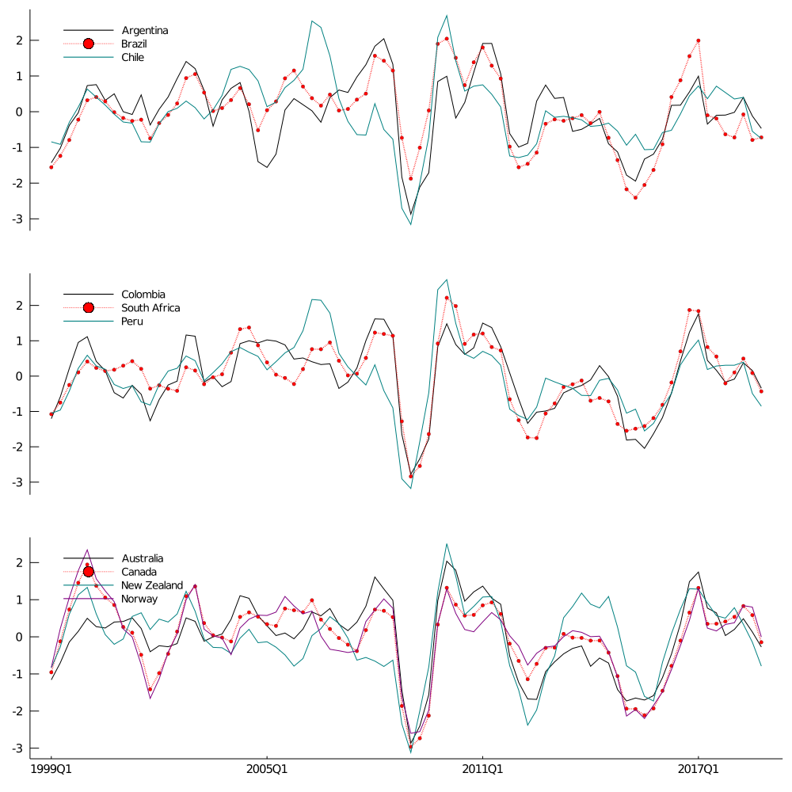

Real commodity prices: We consider the database from the IMF website
which construct country-specific term of trade measured based on exported
commodities and weighted by their relevance on net exports (Gruss and Kebhaj 2019).
Although, the dataset has several measures of commodity indexes, I choose the
fixed-weights and weighted by ratio of exports to total commodity exports since
this has two advantages: a) a fixed-weight measure tends less to structural breaks
and it can deal with mis-reportings, and b) using commodity export participation
as weights allows us to isolate explicitly the effect caused by their movements
without relying on any identification assumption and avoiding any explanation power
from domestic variables on commodity prices (the weights take into consideration the
bilateral trade). Finally, this indexes are deflacted by the import price index of
manufactured goods reported by the FED.
In the following figure, we can see the evolution of the country specific
terms of trade growth rates after being standarized. Almost 80 percent of
the correlations (on non standarized prices)among them are higher than 0.8 suggesting
a common underlying factor.
Figure: Evolution of standarized commodity growth rates
